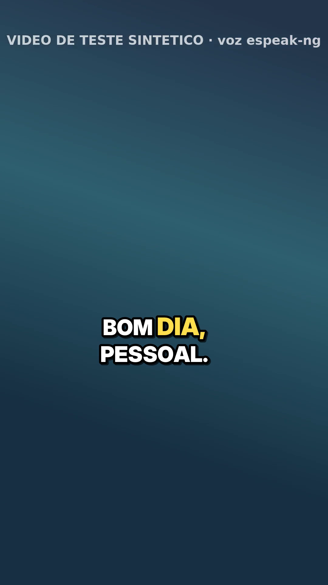
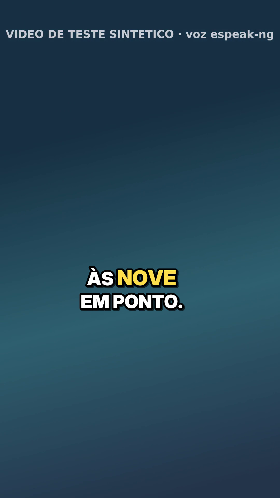
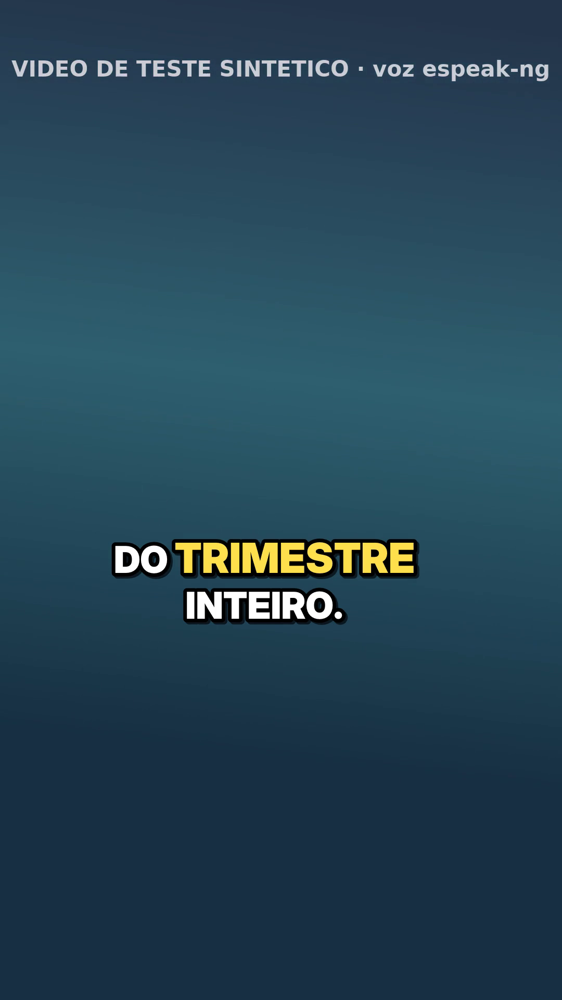
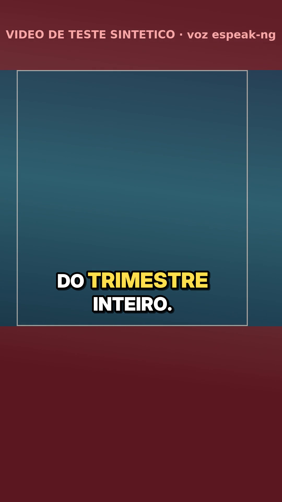

<title>Nuvem · Fred · legenda palavra a palavra</title>
<link rel="preconnect" href="https://fonts.googleapis.com">
<link rel="preconnect" href="https://fonts.gstatic.com" crossorigin>
<link rel="stylesheet" href="https://fonts.googleapis.com/css2?family=Public+Sans:wght@400;600;700&family=IBM+Plex+Mono:wght@400;500&display=swap">
<style>
/* Layout: relatório de uma coluna (~70ch), mesmo sistema visual da série "Nuvem"; os 3 quadros em fila logo abaixo do título */
:root {
  --bg: #f6f8f9; --surface: #ffffff; --fg: #17222b; --muted: #55636e; --line: #d9e1e6;
  --accent: #0d6b6e; --ok: #1f7a3d; --ok-bg: #e3f3e8; --warn: #9a5b00; --warn-bg: #fdf0d9;
  --bad: #a3271f; --bad-bg: #fbe5e3; --code-bg: #eef2f4;
  --sans: "Public Sans", "Segoe UI", system-ui, sans-serif;
  --mono: "IBM Plex Mono", ui-monospace, "SFMono-Regular", Menlo, monospace;
}
@media (prefers-color-scheme: dark) { :root:not([data-theme="light"]) {
  --bg: #11181d; --surface: #182229; --fg: #e4ebef; --muted: #9aa9b3; --line: #2a3943;
  --accent: #5cc4c0; --ok: #6fd18e; --ok-bg: #173523; --warn: #f0b85a; --warn-bg: #3a2c12;
  --bad: #f08a80; --bad-bg: #3d1d1a; --code-bg: #1f2b33; color-scheme: dark; } }
:root[data-theme="dark"] {
  --bg: #11181d; --surface: #182229; --fg: #e4ebef; --muted: #9aa9b3; --line: #2a3943;
  --accent: #5cc4c0; --ok: #6fd18e; --ok-bg: #173523; --warn: #f0b85a; --warn-bg: #3a2c12;
  --bad: #f08a80; --bad-bg: #3d1d1a; --code-bg: #1f2b33; color-scheme: dark; }
* { box-sizing: border-box; }
body { background: var(--bg); color: var(--fg); font-family: var(--sans); font-size: 15px; line-height: 1.6; padding: 32px 16px 56px; }
main { max-width: 760px; margin: 0 auto; display: grid; gap: 28px; }
header { display: grid; gap: 8px; }
.eyebrow { font: 500 12px/1 var(--mono); letter-spacing: .08em; text-transform: uppercase; color: var(--accent); }
h1 { font-size: 28px; line-height: 1.2; margin: 0; text-wrap: balance; }
h2 { font-size: 17px; margin: 0 0 8px; text-wrap: balance; }
p { margin: 0; max-width: 68ch; }
section { display: grid; gap: 10px; min-width: 0; }
.lead { color: var(--muted); }
.chips { display: flex; flex-wrap: wrap; gap: 8px; }
.chip { font: 500 12px/1 var(--mono); padding: 6px 10px; border-radius: 999px; white-space: nowrap; }
.ok { background: var(--ok-bg); color: var(--ok); }
.warn { background: var(--warn-bg); color: var(--warn); }
.bad { background: var(--bad-bg); color: var(--bad); }
.quadros { display: grid; grid-template-columns: repeat(3, minmax(0, 1fr)); gap: 12px; }
.quadros figure { margin: 0; display: grid; gap: 6px; min-width: 0; }
.quadros img, video { width: 100%; max-width: 100%; aspect-ratio: 9 / 16; object-fit: cover; border-radius: 8px; border: 1px solid var(--line); background: #000; display: block; }
figcaption { font: 12px/1.4 var(--mono); color: var(--muted); }
.lado { display: grid; grid-template-columns: minmax(0, 220px) minmax(0, 1fr); gap: 16px; align-items: start; }
@media (max-width: 560px) { .quadros { grid-template-columns: repeat(2, minmax(0, 1fr)); } .lado { grid-template-columns: 1fr; } }
.tbl { overflow-x: auto; border: 1px solid var(--line); border-radius: 8px; background: var(--surface); }
table { border-collapse: collapse; width: 100%; font-size: 14px; }
th, td { text-align: left; padding: 9px 12px; border-bottom: 1px solid var(--line); vertical-align: top; }
tr:last-child td { border-bottom: 0; }
th { font: 500 12px/1.3 var(--mono); color: var(--muted); letter-spacing: .04em; text-transform: uppercase; }
code, .mono { font-family: var(--mono); font-size: 13px; }
code { background: var(--code-bg); padding: 1px 5px; border-radius: 4px; overflow-wrap: anywhere; }
pre { background: var(--code-bg); padding: 12px 14px; border-radius: 8px; overflow-x: auto; margin: 0; font: 13px/1.5 var(--mono); }
ul, ol { margin: 0; padding-left: 20px; display: grid; gap: 4px; max-width: 70ch; }
a { color: var(--accent); }
a:focus-visible { outline: 2px solid var(--accent); outline-offset: 2px; }
footer { color: var(--muted); font-size: 13px; }
</style>

<main>
  <header>
    <div class="eyebrow">Nuvem · Fred · tarefa 8 de 10 · 14/10/2026</div>
    <h1>Legenda palavra a palavra</h1>
    <p class="lead">Um pipeline local que recebe um vídeo 9:16 em português e devolve o mesmo vídeo com a legenda queimada no estilo reels. Aparecem 2 a 4 palavras por vez, a palavra falada fica destacada, a fonte é grande com contorno e sombra, e tudo fica dentro da área segura do Instagram. Usa faster-whisper (small, int8, CPU), um <code>.ass</code> e o ffmpeg, sem serviço pago.</p>
    <div class="chips">
      <span class="chip ok">10 de 10 testes passaram</span>
      <span class="chip ok">vídeo sintético legendado</span>
      <span class="chip warn">Whisper não rodou aqui (modelo bloqueado)</span>
    </div>
  </header>

  <section>
    <h2>Quadros do vídeo de teste legendado</h2>
    <div class="quadros">
      <figure><figcaption>print_1.png · 1,1 s</figcaption></figure>
      <figure><figcaption>print_2.png · 5,4 s</figcaption></figure>
      <figure><figcaption>print_3.png · 11,2 s</figcaption></figure>
    </div>
    <p>O vídeo é <b>sintético</b>: fundo em degradê e voz do espeak-ng, gerados pelo <code>gerar_teste.py</code>. A fonte é Inter Display Black, a pesada que existe nesta máquina; no Windows a padrão é Arial Black. Os tempos das palavras vêm do gabarito exato da voz sintética, no lugar do Whisper.</p>
  </section>

  <section>
    <h2>O vídeo e a área segura</h2>
    <div class="lado">
      <video src="exemplo_legendado.mp4" controls preload="metadata" playsinline aria-label="Vídeo sintético legendado, 13 segundos"></video>
      <div style="display:grid; gap:10px; min-width:0">
        <p><code>exemplo_legendado.mp4</code> tem 1080x1920, 13,4 s, com o áudio original copiado.</p>
        <p>Com <code>--guia</code>, o que fica fora da área segura é pintado (<code>print_guia_area_segura.png</code>). A padrão é 14% em cima, 35% embaixo, 6% nas laterais e mais 6% à direita por causa dos botões. É a regra prática para Reels; não conferi na página da Meta nesta sessão.</p>
        <figure style="margin:0; max-width:220px"><figcaption>print_guia_area_segura.png</figcaption></figure>
      </div>
    </div>
  </section>

  <section>
    <h2>Entregáveis</h2>
    <div class="tbl"><table>
      <thead><tr><th>Arquivo</th><th>Status</th><th>O que é</th></tr></thead>
      <tbody>
        <tr><td><code>legenda_reels.py</code></td><td><span class="chip ok">pronto</span></td><td>Faz o pipeline inteiro: transcreve (ou lê um <code>palavras.json</code>), monta os blocos, escreve o <code>.ass</code>, queima com o ffmpeg e tira os prints.</td></tr>
        <tr><td><code>gerar_teste.py</code></td><td><span class="chip ok">pronto</span></td><td>Gera o vídeo sintético com voz espeak-ng e o gabarito exato. Também compara uma transcrição do Whisper com o gabarito.</td></tr>
        <tr><td><code>test_legenda_reels.py</code></td><td><span class="chip ok">10 de 10</span></td><td>Unidades, o <code>.ass</code>, o Whisper com modelo falso, a ponta a ponta com o vídeo sintético (pixel a pixel) e o vídeo de celular girado.</td></tr>
        <tr><td><code>print_1.png</code> a <code>print_3.png</code></td><td><span class="chip ok">3 PNG</span></td><td>Quadros legendados do vídeo de teste, mais <code>print_guia_area_segura.png</code>.</td></tr>
        <tr><td><code>exemplo_legendado.mp4</code>, <code>.ass</code>, <code>exemplo.gabarito.json</code></td><td><span class="chip warn">sintético</span></td><td>O vídeo de teste legendado, a legenda gerada e o gabarito das palavras.</td></tr>
        <tr><td><code>LEIA-ME.md</code></td><td><span class="chip ok">pronto</span></td><td>Como usar no Windows, as opções, as regras dos blocos e as limitações.</td></tr>
      </tbody>
    </table></div>
  </section>

  <section>
    <h2>Para rodar no PC</h2>
<pre>pip install faster-whisper                  # ffmpeg no PATH (build do gyan.dev)
python legenda_reels.py video.mp4           # video.palavras.json + video_legendado.ass + .mp4
python legenda_reels.py video.mp4 --sem-legenda 0:12-0:15 --destaque "#7CFF6B" --prints 3
# teste do Whisper contra o gabarito (precisa do espeak-ng):
python gerar_teste.py --saida teste.mp4
python legenda_reels.py teste.mp4 --retranscrever
python gerar_teste.py --comparar teste.palavras.json teste.gabarito.json</pre>
    <p>A transcrição fica salva em <code>video.palavras.json</code>. Se o Whisper errar uma palavra, corrija ali e rode de novo: ele não transcreve outra vez.</p>
  </section>

  <section>
    <h2>Como a legenda é montada</h2>
    <ul>
      <li><b>Blocos:</b> cada frase é dividida pela partição de menor custo. O ideal é 3 palavras e o máximo é 4 palavras ou 22 caracteres. Quebrar em vírgula ou pausa é bom; terminar em "de", "às" ou "em" no meio da frase é ruim. "A reunião de hoje começa às nove em ponto." vira 2 + 3 + 4, sem um "PONTO." sozinho.</li>
      <li><b>Destaque:</b> há um evento por palavra, com só ela em cor de destaque e com zoom de 112%. Ela fica acesa até a próxima começar, e o bloco segura 0,25 s no fim, sem invadir o seguinte.</li>
      <li><b>Quebra de linha:</b> o código decide a quebra e usa a mesma em todos os eventos do bloco, para o texto não pular quando o zoom troca de palavra.</li>
      <li><b>Trechos sem legenda:</b> <code>--sem-legenda 0:12-0:15</code> tira as palavras desses trechos antes de montar os blocos.</li>
    </ul>
  </section>

  <section>
    <h2>Limitações e o que não deu para verificar</h2>
    <ul>
      <li><b>O faster-whisper não transcreveu de verdade aqui.</b> O modelo vem do HuggingFace e o download deu 403 no proxy desta nuvem. A chamada foi conferida contra o faster-whisper 1.2.1 e testada com um modelo falso. O acerto e o erro de tempo reais saem no PC, com o <code>--comparar</code>.</li>
      <li>A área segura usa uma regra prática não conferida na fonte oficial. A cota de buscas web desta sessão acabou antes.</li>
      <li>O tempo de palavra do Whisper erra por dezenas a centenas de milissegundos e piora com música alta. Por isso o <code>palavras.json</code> fica editável.</li>
      <li>A quebra de linha estima a largura das letras (0,72 do tamanho da fonte). Com uma fonte muito diferente, ajuste <code>--tamanho</code>.</li>
      <li>Queimar a legenda recodifica o vídeo (x264, CRF 18). A perda é pequena, mas existe.</li>
    </ul>
  </section>

  <footer>Gerado numa sessão de nuvem do Claude Code. Tudo o que aparece nesta página é sintético; nenhum vídeo do Fred foi usado.</footer>
</main>
